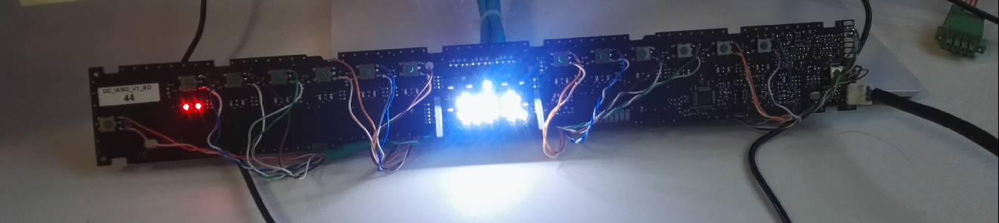

Projects
CLI for credential manager app
Goal of this project was to create a python wrapper over corporate credential manager app. Beside, it was crucial to make a separation of concerns for all automation scripts where secrets were managed.
clickas a CLI frameworkpytestas a test frameworkmkdocsas a documentation
Machine Learning application in prediction of outcome after osteophytectomy in Forester disease
- Award at Global Spine Congress, Los Angeles 2022.

Cloud app to continuously verify connection with cloud data services
The idea of the app was to create a scheduled service which will test the availability of offered services in a private cloud. The app was automatically detecting to which kind of service it is bounded to and based on this information, relevant module was used to create a connection and test the exchange of data. This scheduled process was serving also REST endpoint with all metrics.
flaskas a web frameworkpytestas a test frameworkmkdocsas a documentation- Strategy as a design pattern
- Services: Redis, PostgreSQL, MariaDB, Prometheus, ELK, MongoDB
Algorithm and tool for automated LED brightness evaluation
One of the software requirements for home appliances is to robustly control the brightness of the fascia panel LED's. My job was to find if it is possible to measure the brightness in a reproducible and reliable way.
Having a camera and electronics in a dark box, I could design a software which will automatically measure the the brightness of the LED's based camera adjustments, images and LED properties.
Research included all variants and all conditions. All results were prepared as a presentation with a detailed explanation of how to measure, record the results and how to deal with measurement errors.

Powered ankle-foot prosthesis


Control system of a powered ankle-foot prosthesis
During my internship in Bristol Robotics Laboratory, my main task was to find out and create a design of control system of artificial foot. The idea of this project was to proof that robotic human leg can be controlled intuitively by brain and muscle signal.
The first step was to do a research about all already known solutions for that kind of problem. During this research, also important was to study the anatomy, physiology of a human lower limbs and gait biomechanics. Based on this research I have set theoretical assumptions and I derived the formula for muscle force based on the amplification of the neural signals
Next step was to determine the design scheme based on this teorethical assumptions. With his scheme, other specific mathematical equations were possible to calculate.
In a practical part of the project was to create a EMG detector of own design. It was necessary to collect sample data and based on this data, simulate the signal for designed algorithm. Major task on this stage was to analyze the signal and separate it from the noise. Thus, then, the prepared signal could be used as an input and evaluation of output control signal was possible.
The final step was evaluate the whole algorithm and adjust all constant values in order to best replicate the physiological movement of the foot during gait.
Scientific paper was prepared as a result of this project
- Scientific research
- Building own EMG signal detector based on Arduino
- Analyzing EMG signal from human gait
- Research of dynamic algorithm to mimic human gait with prosthesis based on collected data and physics of construction prototype